1
打开软件
- 点检桌面软件图标，以管理员的身份运行软件
账号密码
管理员密码
admin7ab8cd9ef
操作员密码
123
工程师密码
eng4a5b6c
AC308、AC306、AC204 同等操作
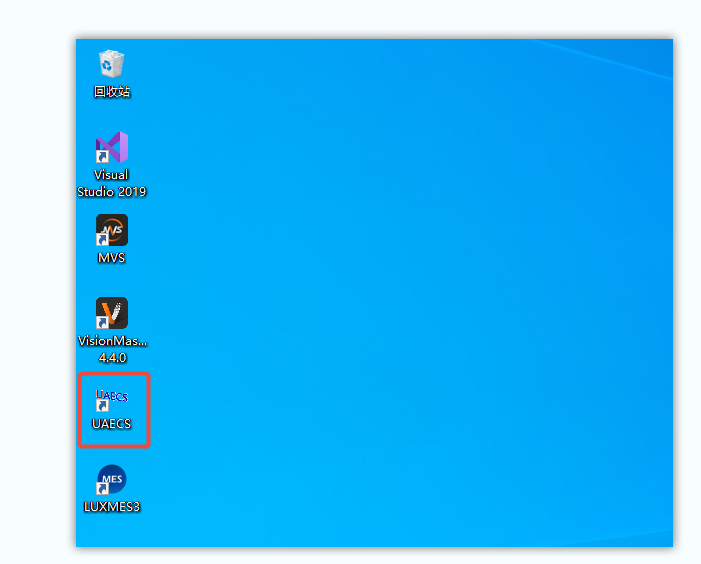
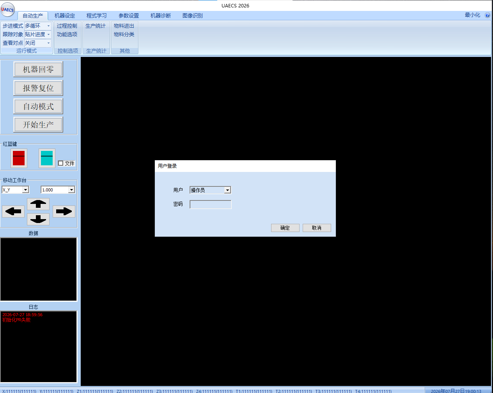
2
启动软件
- 确认机器内部没有产品（如果有产品请手动拿出）
- 点击机器回零按钮
- 第一次回零会报警，点确定后点击报警复位，然后再点击机器回零
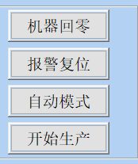
3
程序选择
程序切换前提醒
如果设备正在生产或者待产请先停止生产（此状态为停止生产）

- 点击程序学习
- 选取程序
- 选取需要使用的程序（共4种程序，以现场需要选取）
- 点击加载
- 观察目标程序是否显示读取成功
- 点击确认
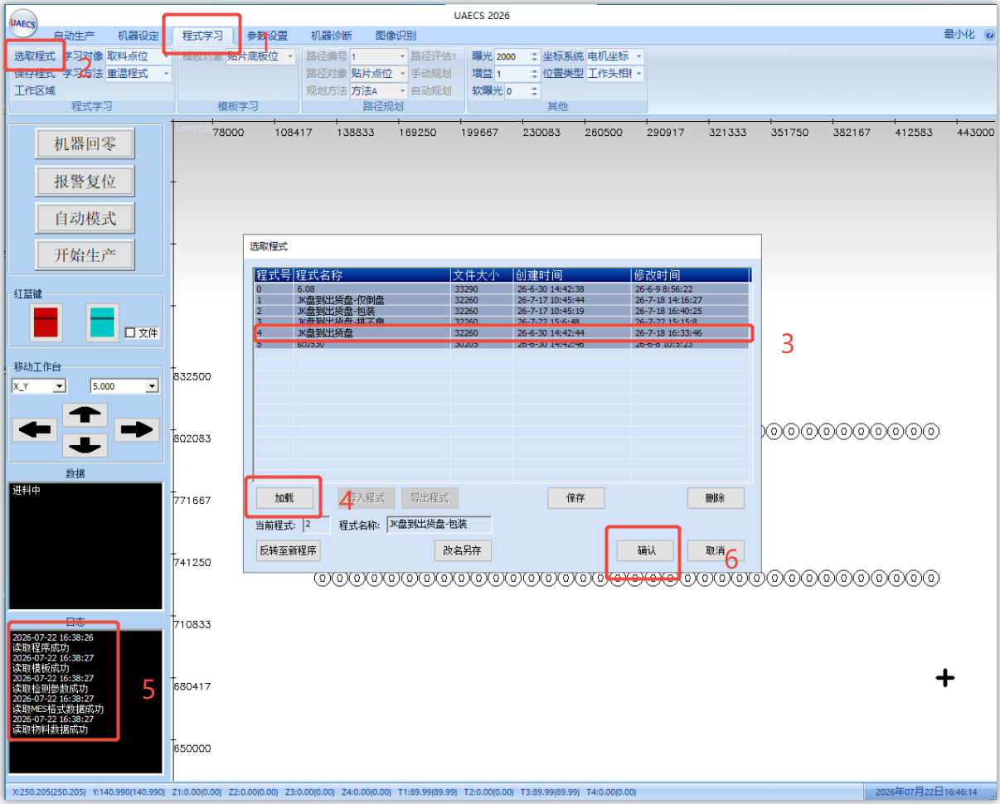
A
挑选尺寸NG
▼
- 点击程序学习
- 选择程序
- 选取程序内挑不良的程序
- 点击加载
- 查看日志程序是否加载成功
- 点击确认
- 点击参数设置
- 选择物料分类
- 选择需要挑选物料状态（物料状态以不良代码命名，如：VN-FVI255 为 FAI11 尺寸不良），以现场实际挑选状态实时更改
- 所有程序更改完成后点击开始生产即可
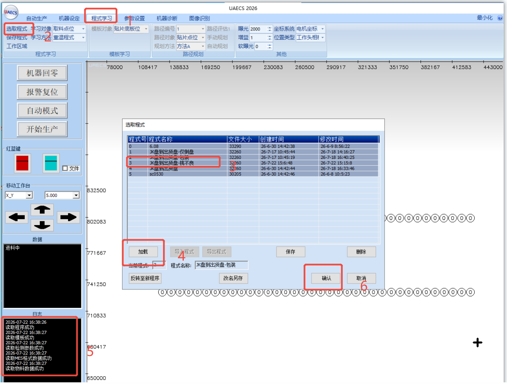
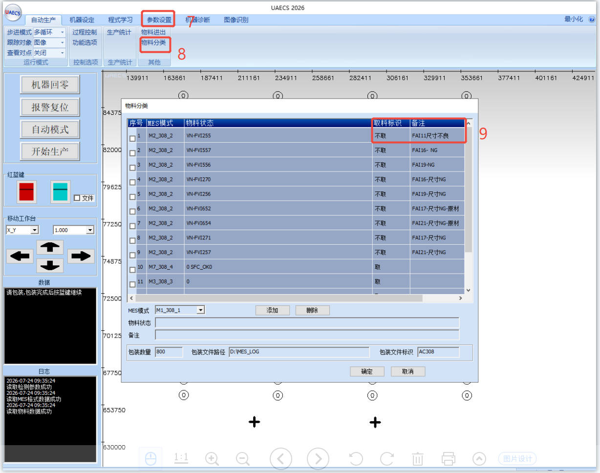
B
包装程序
▼
- 点击程序学习
- 点击选取程序
- 选择包装程序
- 点击加载
- 观察日志是否加载成功
- 点击确认
- 点击机器诊断
- 点击网口
- 核对工单号、员工工号及包装站点（如需更改请在这里更改）
- 选择包装使用的数据格式，包装默认使用 M9-308-34，点击确认即可
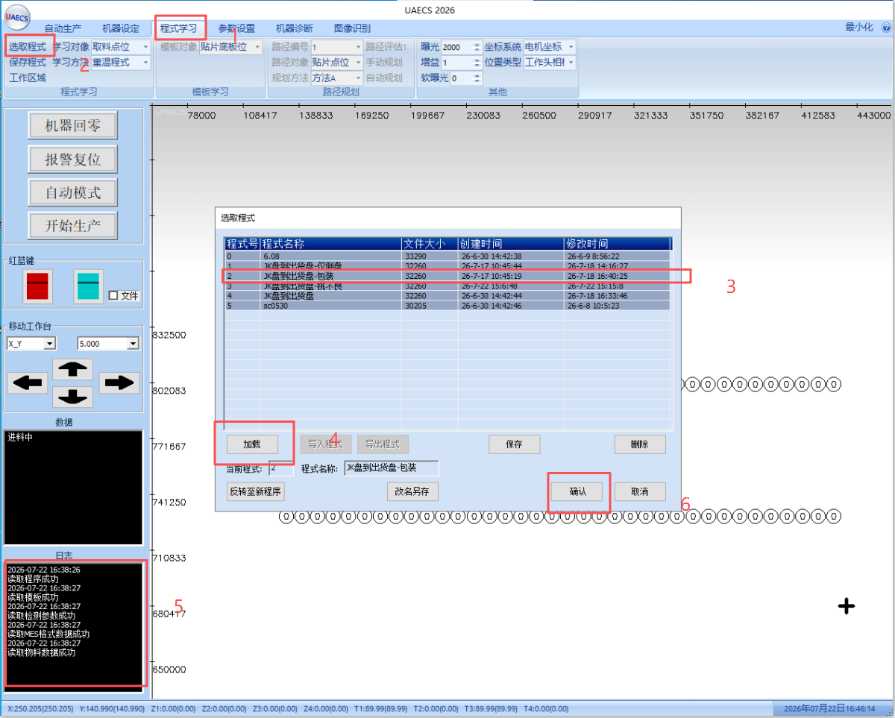
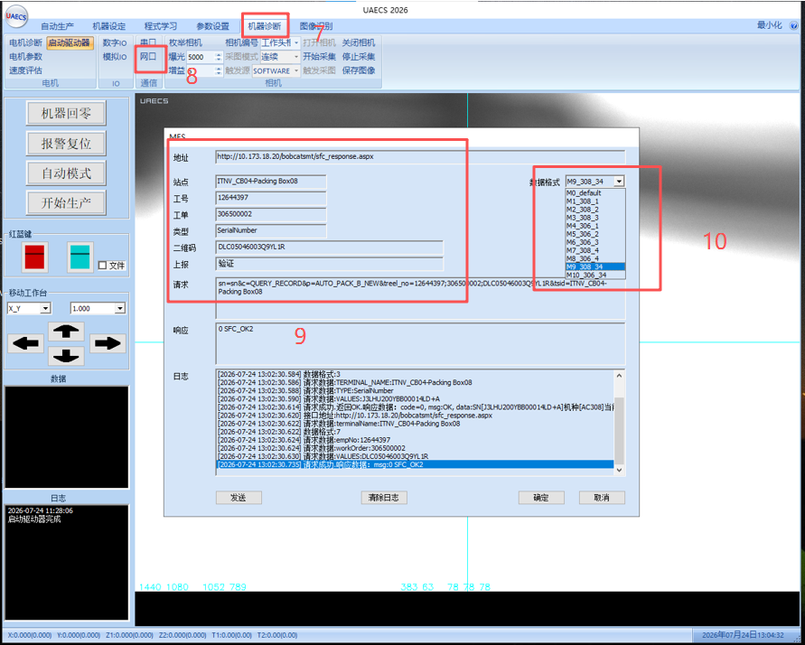
4
MES模式
| 程序名称 | 默认功能 |
|---|---|
| AC308_1 / AC306_1 | 挑 Hold |
| AC308_2 / AC306_2 | 挑尺寸 NG |
| AC308_3 / AC306_3 | 检查途程 |
| AC308_34 / AC306_34 | 包装 |
请按照现场实际情况挑选
AC308_34 / AC306_34 项意思仅为同时启用 AC308_3 / AC306_3 和 AC308_4 / AC306_4，如需更改工单号请单独修改每一项
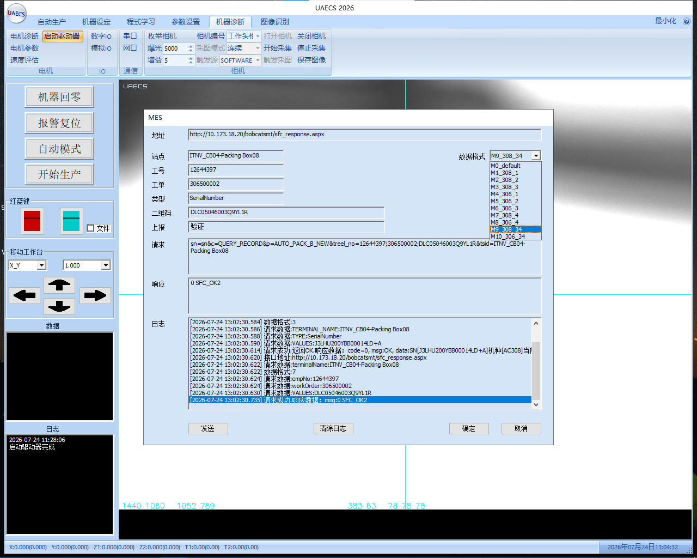
5
点位调整
- 点击参数设置
- 选择需要调整的数据（取料或者贴片，贴片为放料）
- 选择需要调整的位置，X / Y / Z 轴更改数据
- 选择需要更改位置的吸嘴
- 点击确认，点击开始生产观察取放料是否 OK
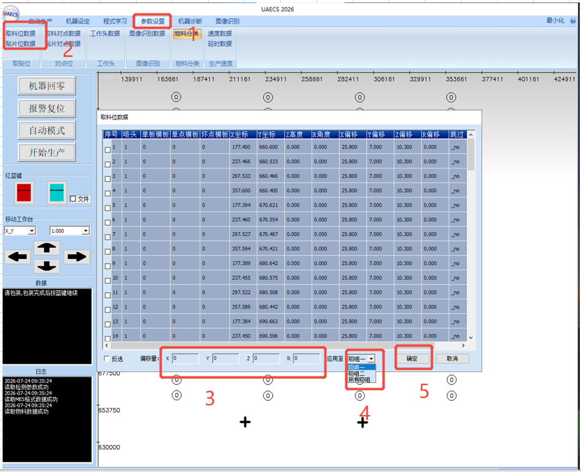
6
软件主界面功能说明
1
红蓝键
▼
红色按钮为暂停，蓝色按钮为启动，用于控制设备的运行与停止状态。
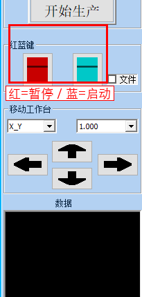
2
上下左右键（移动工作台）
▼
在"移动工作台"区域，通过方向键控制 X/Y/Z/R 轴的移动；配合轴选择与步长设置，可精确调整工作台位置。
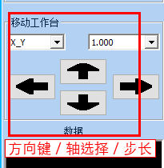
3
过程控制
▼
用于管理生产过程中的各项控制参数与状态。
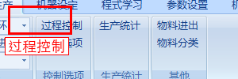
详细设置窗口：
- 取料对点（板）：取料位置的MARK点，用于计算或补偿取料区域的位置
- 取料对点（位）：每一个取料位置，用于扫码或补偿单个点的位置
- 贴片对点（板）：贴料位置的MARK点，用于计算或补偿贴料区域的位置
- 贴片对点（位）：每一个贴料位置，用于补偿单个点的位置
- 取料：进行取料动作（生产必须勾选否则设备无法正常运行）
- 贴片：进行贴料动作（生产必须勾选否则设备无法正常运行）
- 飞拍：通过设备下相机计算补偿或扫描产品背部二维码
- 轨道1进出料：设备运行时轨道1是否正常进行进出板动作（生产必须勾选否则设备无法正常运行）
- 轨道2进出料：设备运行时轨道2是否正常进行进出板动作（生产必须勾选否则设备无法正常运行）
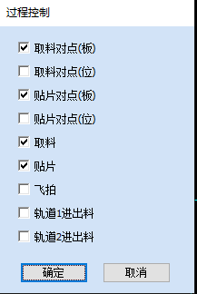
4
功能选项
▼
提供额外的功能配置和选项设置入口。
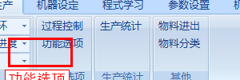
详细设置窗口：
功能选项
- 取料对点位扫码分类：对取料位置进行扫描二维码进行不良挑选或挑选HOLD或包装
- 飞拍位扫码分类：通过飞下相机拍照扫描二维码进行不良挑选或挑选HOLD或包装
- 取料对点位扫码(有料检测)：对取料位置进行扫描二维码来检测是否有料
- 飞拍位扫码(有料检测)：对贴料位置进行扫描二维码来检测是否有料
- 飞拍有料检测：通过飞拍模板检查吸嘴上是否有料（功能未完成）
- 启用包装：启用包装MES
- 取料检测：通过真空检测吸嘴上是否有料（功能未完成）
- 重贴检测：防重贴（功能未完成）
- 贴片检测：检查是否贴偏（功能未完成）
- 保存生产图片：保存生产中下相机飞拍的照片
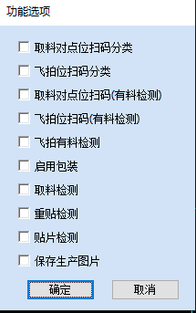
5
物料进出
▼
控制物料的进入和退出流程，管理上下料动作。
此区域可以手动控制轨道进出料。
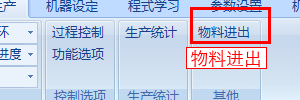
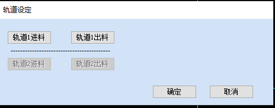
6
物料分类
▼
用于对物料进行分类管理和识别配置。
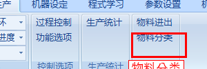
物料分类
- 取料标识：点击可以切换是否取当前状态的料
- 物料状态：此栏输入不良代码或产品状态配合4可以进行组合（详见MES功能说明）
- 包装数量：启用包装模式时需要在此输入对应包装数量来进行包装或补料
- MES模式：通过更改不同的MES模式与3组合成不良挑选或挑选HOLD或包装（详见MES功能说明）
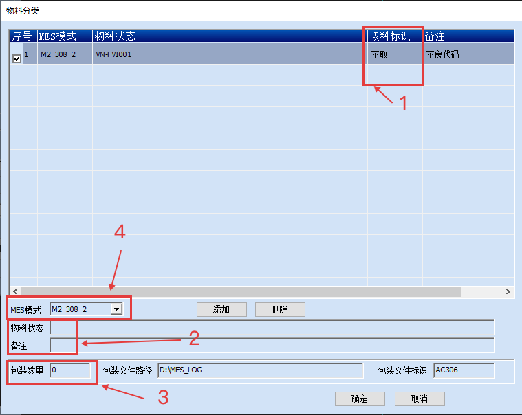
7
参数设置
▼
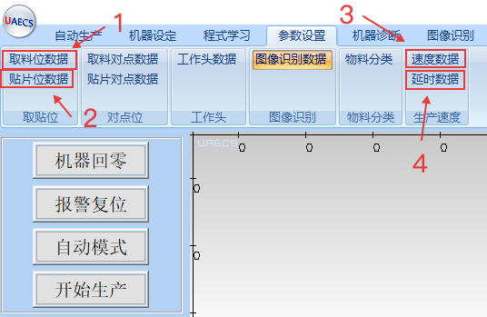
- 取料位数据：可以更改取料时的每个吸头的整体坐标（详见点位调整）
- 贴片位数据：可以更改贴料时的每个吸头的整体坐标（详见点位调整）
- 速度数据：可以更改生产时 X/Y/Z/T 轴的速度（不要随便调整以下是原始参数）
- 延时数据：可以修改每个动作相对应的轴运动或感应器触发的延时
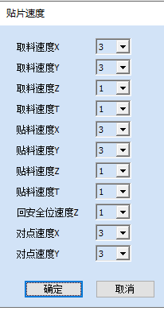
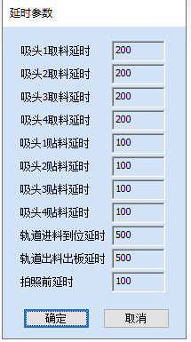
8
易损清单
| 序号 | 配件名称 | 规格型号 |
|---|---|---|
| 1 | 吸嘴 | 根据客户料图纸定制 |
| 4 | 双轨道传送皮带 | 尼龙片基带(不防静电) 周长1877mm 宽10 公差5(0/-0.1)mm 厚度1.2mm |
| 5 | 双轨道限位气缸 | CXSM10-20 |
| 7 | 下相机网线 | GE RJ45/S to RJ45 3m (COMOSS) |
| 8 | 上相机网线 | GE RJ45/S to RJ45 5m HighFlex |
| 9 | 下相机电源线 | 触发线高柔性500W-直头 |
| 10 | 上相机电源线 | 触发线高柔性1000W-直头 |
| 11 | X轴编码线 | 定制品 |
| 12 | Y轴编码线 | 定制品 |
| 13 | Z轴编码线 | 定制品 |
| 14 | R轴编码线 | 定制品 |
| 15 | X轴感应器 | EE-SX674-WR |
| 16 | Y轴感应器 | EE-SX674-WR |
| 17 | Z轴感应器 | PM-L25 NPN (1米) |
| 18 | R轴感应器 | EE-SX674-WR |
| 19 | 下相机光源电源线 | SM-3P/公母(中空)-3M |
| 20 | 网线 | 黑色cat6a高柔双屏蔽千兆网线 |
| 21 | X驱动器 | CDHD-4D52AAP1 |
| 22 | Y驱动器 | CDHD-4D52AAP1 |
| 23 | Z轴联轴器 | 单 外径19 长20 孏4.5/8(mm) |
| 27 | X驱动器 | CDHD-4D52AAP1 |
| 28 | Y驱动器 | CDHD-4D52AAP1 |
| 31 | 48V开关电源 | LRS-350-48v |
| 32 | 24V开关电源 | LRS-350-24v |
| 36 | Z/R驱动器 | 2hss57-a-42 / 2dm415 两款型号 |
| 37 | R轴电机 | 28J1851-410-8-1510-01 |
| 38 | Z轴电机 | 42J1848EC-1000-LS |
| 39 | 气撑 | 210N 两孔间距310，球头 |
| 40 | 传送带停板感应器 | YC031CG30N |
| 41 | 传送带电机 | 23HS6404-8TB |
| 42 | 磁栅尺读数头 | PSLH080-0SC |
| 43 | 磁栅尺 | PSLF2-0200B |
9
设备保养手册
1
前言
▼定期合理的保养可保证设备处于良好状态，减少故障率，提高设备完好率、利用率，减少设备磨损，延长设备的使用寿命，降低设备运行维护成本，确保安全生产。
2
保养注意事项
▼- 非专业人员禁止操作；
- 保养前机台必须要断开电源，并将插头拔出；
- 保养时必须在机台显眼位置放置警示牌；
3
准备工作
▼准备无尘纸/无尘布、酒精、防锈油、轨道丝杠润滑油及油枪、气枪、开口扳手、内六角扳手、防静电手套等；
4
4.1 X 轴
▼- 使用无尘纸/无尘布对定子、导轨进行灰尘及油渍清理；
- 使用专用加油枪对导轨滑块添加新的润滑油；
- 使用无尘纸/无尘布对光栅尺表面灰尘及油渍清理（注意：不可使用酒精进行清洁；不要大力擦拭光栅尺，否则可能会刮花光栅尺表面，不可有异物残留光栅尺表面）；
- 手动推动X轴，观察光栅尺读数头指示灯颜色（正常位墨绿色），并对其固定螺丝进行紧固确认；
- X轴电机固定螺丝、电机座固定螺丝、磁铁固定座螺丝、滑块固定螺丝等主要部位进行紧固确认；
- 检查X 轴拖链及线材是否有磨损现象或损坏现象；
- 检查X 轴原点、限位传感器螺丝紧固确认，接头确认，功能确认；
- 机架空白处涂抹防锈油；
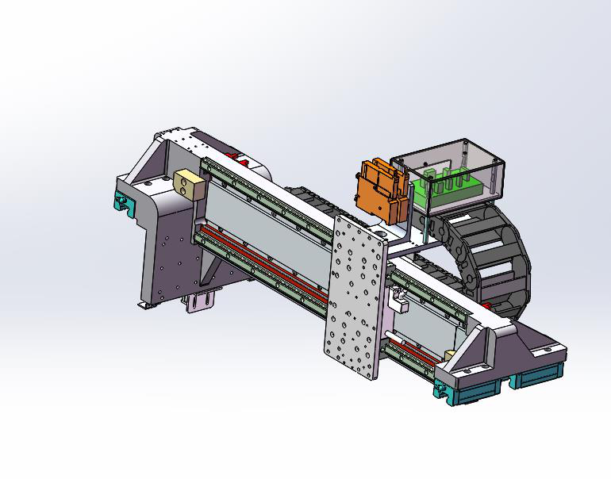
5
4.2 Y 轴
▼- 使用无尘纸/无尘布对定子、导轨进行灰尘及油渍清理；
- 使用专用加油枪对导轨滑块添加新的润滑油；
- 使用无尘纸/无尘布对光栅尺表面灰尘及油渍清理（注意：不可使用酒精进行清洁）；
- 手动推动Y轴，观察光栅尺读数头指示灯颜色（正常位墨绿色），并对其固定螺丝进行紧固确认；
- Y轴电机固定螺丝、电机座固定螺丝、磁铁固定座螺丝、滑块固定螺丝等主要部位进行紧固确认；
- 检查Y 轴拖链及线材是否有磨损现象或损坏现象；
- 检查Y 轴原点、限位传感器螺丝紧固确认，接头确认，功能确认；
6
4.3 整组贴装头
▼- R 轴和Z 轴电机、连轴器、丝杠法兰固定螺丝紧固确认；
- R 轴和Z 轴轴承、滑块质量及螺丝紧固确认；
- R 轴气动滑环、电动滑环固定螺丝紧固确认；
- Z 轴气压、自锁功能确认；
- 伺服马达螺丝紧固确认；
- Z1 Z2 R1 R2 轴限位感应器功能确认；
- 确认机头气压大小，看看是否有东西堵塞；
- 上相机固定座固定螺丝紧固确认；
- 上相机镜头与相机紧固确认；
- 上相机镜头螺丝紧固确认；
- 上相机镜头表面灰尘、杂物清理；
- 上相机图像清晰度确认；
- 上相机光源表面灰尘、杂物清理及功能确认；（相机以及光源表面为易碎品，清洁时请多加注意）
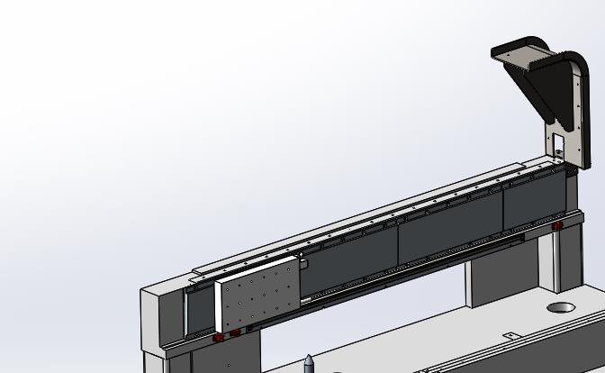
7
4.4 传送轨道
▼- 使用无尘纸/无尘布清洁丝杠表面灰尘及油渍；
- 调宽窄电机、传送电机固定螺丝、电机座固定螺丝、丝杠固定座螺丝、丝杠法兰固定螺丝等主要部位进行紧固确认；
- 检查轴承是否损坏确认；
- 检查原点、限位传感器螺丝紧固确认，接头确认，功能确认；
- 检查皮带是否有严重磨损；
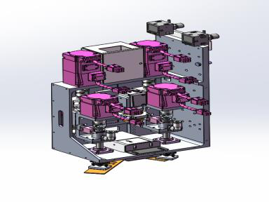
8
4.5 下CCD 相机
▼- 相机固定座固定螺丝紧固确认；
- 相机镜头与相机紧固确认；
- 相机镜头螺丝紧固确认；
- 相机镜头表面灰尘、杂物清理；
- 相机图像清晰度确认；
- 相机光源表面灰尘、杂物清理，功能确认；（相机以及光源表面为易碎品，清洁时请多加注意）
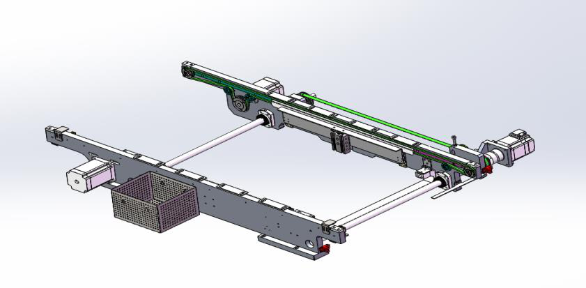
9
4.6 工控机（操做时佩戴防静电手套）
▼- 工控机扇热风扇灰尘清洁；
- 工控机CPU 加扇热膏；
- 工控机固定螺丝松紧确认；
10
4.7 电控/气路
▼- 电控箱灰尘清洁；（不可使用清洁剂）
- 设备左右扇热风扇确认是否正常以及清理灰尘；
- 空气过滤器放水，确认输入气压不低于0.5pa；
- 打开各个气路开关查看是否有漏气现象；
- 安全门接近开关，安全光幕功能确认；
11
4.8 外壳及机台表面清洁
▼- 设备外观使用酒精进行清洁；
- 设备抛料盒清洁；
- 设备表面清洁。
10
驱动器手册
1
LED 显示代码及定义
▼| 显示文本 | 定义 | 类型 |
|---|---|---|
| 0 | IDLE | 模式 |
| 1 | ADC | 模式 |
| 2 | Motor Phase Identify | 模式 |
| 3 | Machine Identify | 模式 |
| 4 | Voltage OMode | 模式 |
| 5 | Current CMode | 模式 |
| 6 | Velocity CMode | 模式 |
| 7 | Position CMode | 模式 |
| E0 | OC | 故障 |
| E1 | OV | 故障 |
| E2 | UV | 故障 |
| E3 | BRKPH | 故障 |
| E4 | RESERR | 故障 |
| E5 | OL | 故障 |
| E6 | OT | 故障 |
| E7 | IOERR | 故障 |
| E8 | REG | 故障 |
| E9 | PS | 故障 |
| F0 | OS | 故障 |
| F1 | OPRE | 故障 |
| F2 | DIR | 故障 |
| F3 | SOC | 故障 |
| F4 | OBPH | 故障 |
| F5 | OT_MOT | 故障 |
| F6 | PTE | 故障 |
| F7 | STO | 故障 |
| F8 | 0B_ERR | 故障 |
| F9 | FAN | 故障 |
| L0 | SRF | 故障 |
| L1 | OBP | 故障 |
| L2 | NET | 故障 |
| L3 | VTE | 故障 |
| L4 | MPHA | 故障 |
| L5 | HOME | 故障 |
| L6 | PPNE | 故障 |
| L7 | HALL | 故障 |
| L8 | SYN_ERR | 故障 |
| L9 | OLD | 故障 |
| P0 | SENCER | 故障 |
| P1 | SUPPLYERR | 故障 |
| P2 | SLAVEERR | 故障 |
| P3 | FLASHERR | 警告 |
| P4 | LIMITERR | 警告 |
| P5 | PRETE | 故障 |
| P6 | STALL | 故障 |
| P7 | BKROL | 故障 |
2
常见故障排除方法
▼| 代码 | 报警名称 | 可能原因 | 应对措施 |
|---|---|---|---|
| E0 | 伺服过流 (OC) | 1.负载过大 2.电机输出侧短路 3.参数设置错误 | 1.减小负载 2.检查接线 3.检查参数 |
| E1 | 伺服过压 (OV) | 1.电源电压过高 2.减速时间太短 3.刹车电阻容量不足 | 1.检查电源 2.减小斜坡 3.检查刷车电阻 |
| E2 | 伺服欠压 (UV) | 1.电压过低 2.瞬时负载过重 3.输入侧连线有误 | 1.检查AC电压 2.检测连线 |
| E4 | 编码器故障 (RESERR) | 1.接线松动 2.屏蔽接地未连接 3.电路异常 | 1.检查接线 2.检查接地线 3.减少干扰 |
| E5 | 伺服过载 (OL) | 1.负载过大 2.输出短路 3.参数错误 | 1.减小负载 2.检查接线 3.检查参数 |
| E6 | 伺服过温 (OT) | 1.IPM过热 2.电机过热 3.整流桥过热 | 1.检查负载 2.检查容量 3.检查散热 |
| E9 | 功率模块故障 (PS) | 1.IPM损坏 2.系统干扰 | 联系技术支持 |
| F0 | 电机超速 (OS) | 1.速度过高 2.编码器异常 3.参数错误 4.响应超调 5.转子位置不准 | 1.检查接线 2.检查参数 3.检查转速参数 |
| F5 | 电机过温 (OT_MOT) | 1.长时间过载 2.散热不好 3.堵转 | 1.检查散热 2.是否堵转 3.是否过载 |
| F6 | 位置跟随误差超限 (PTE) | 1.加速度过大 2.参数不合适 3.接线异常 | 1.减小加速度 2.检查参数 3.检查接线 |
| F7 | STO故障 | STO急停按钮拍下 | 检查STO急停按钮是否松开 |
| F9 | 风扇故障 (FAN) | 1.风扇损坏 2.电源异常 3.信号异常 | 联系技术支持 |
| L2 | gLink-II通信异常 | 通信线缆接触不良 | 检查通信线缆连接 |
| L5 | 回零失败 (HOME) | 回零模式设置错误 | 检查回零模式设置 |
| P3 | FLASH读取失败 | 底层芯片损坏 | 联系商务退换货 |
| P4 | 限位报警 (LIMITERR) | 正负限位触发 | 解决限位触发条件 |
| P6 | 电机堵转 (STALL) | 电机堵转超限 | 查看电机运行是否正常 |
| P7 | 制动电阻过载 (BKROL) | 制动电阻超过功率和阻值 | 使用大的制动电阻 |
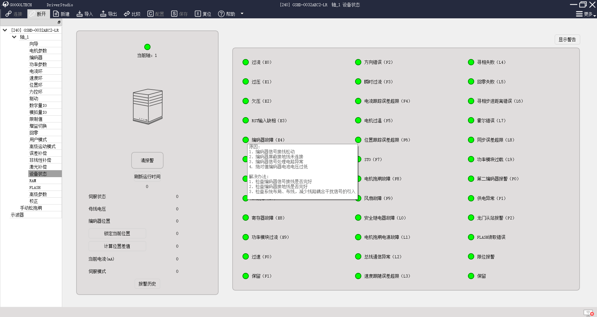